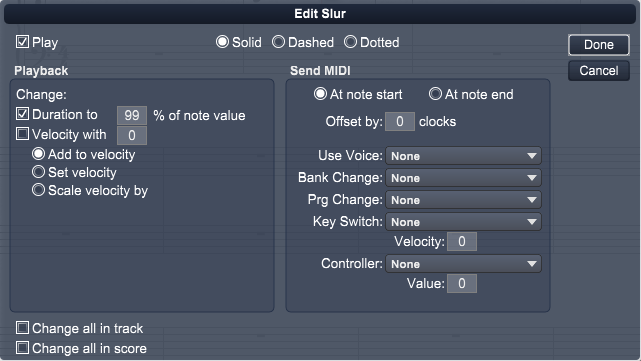

Notes>Group>Slur
Choose this command to create a slur across all notes in the selected group. To create a slur in your score:
- Select the notes you want slurred.
- Choose Notes>Group>Slur.
Overture creates a slur between the notes, even if they are on different systems.
If you wrap measures containing slurs (as discussed in Increase Measures on System and Decrease Measures on System), Overture keeps all slurs over all notes even if you wrap a measure onto another system.
Using the Slur command is the same as selecting the Slur tool from the Groups palette and grouping notes in the Score View.
To edit how slurs are drawn or affect playback, double click to open the slur playback dialog.
Edit Slur Dialog

The Edit Slur dialog lets set thhow the slur is drawn and tell Overture how you want MIDI playback of the notes under the slur to be affected.
Style
Choose how you wnat the slur to be drawn:
- Solid - Draw slur as a solid curve
- Dashed - Draw slur using dashes
- Dotted - Draw slur using dots
Playback
Change one of these options:
- Duration to x % of note values. Set this value to provide a legato effect to notes under the slur by extending their duration to the next note. Values from 25% to 100% will extend each note's duration by this percentage to the next note. Values beyond 100 will extend the note's duration a specified number of clocks determined by value - 100. For example 110 would extend the note 10 clocks beyond the next note.
- Velocity with x. Uses this value with the settings below to alter the velocity of notes under the slur.
Add to velocity - Add the value to the note's velocity
Set velocity - Set the note's velocity to the value
Scale velocity by - Scale the note's velocity by this percentage
Send MIDI
The following describes each of the Send Options:
- Use Voice. Choose this option if you want the expression to force a track to use the playback setting for a different voice. Ex. If voice 1 is a normal violin sound on channel 1 and voice 2 is a pizzicato sound on channel 2, an expression entered on voice 1 could force all notes in voice 1 to start play using voice 2 settings. In other words, send all voice 1 notes out on channel 2 instead of channel 1. Another expression later on, could force all notes to be played using the original settings for voice 1.
- Bank Change - Choose this option if you want the expression to send MIDI Bank Change data to the track's playback device.
- Program Change - Choose this option if you want the expression to send MIDI Program change data to the track's playback device.
- Key Switch. Choose this option if you want the expression to send a key switch. Key switches are used by sample libraries to switch styles within a sample. The popup menu normally only shows the valid key switches for this track and voice. If you wish to see all possible key switches, check the appropriate setting in the Preferences dialog. The displayed key switches are read in from the Sound Map files for devices that Overture has settings.
Velocity - Set the velocity to be used for the key switch note.
Latch - Set this if you want the key switch only to affect the next note.
- Controller - Choose this option if you want the expression to send a MIDI Controller change data to the track's playback device.
Value - The controller's value.
Change all in this track - Select this option to change all slurs in the current track to these settings.
Change all in score - Select this option to change all slurs in the score to these settings.
Click Done to apply your choices for the selected slur.